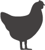

Since you loaded this page Worldwide:
0
0
Land animals (aprox.)1
Sea animals (aprox. Tons)2
Cattle
0
Pigs
0
Sheep
0

Chicken
0
Turkey
0
Sea Animals
0
2023 DATA FROM 2020 ESTIMATES
Since you loaded this page Worldwide:
Cattle
Pigs
Sheep
Chicken
Turkey
Sea Animals
The yearly total is the sum of cattle, pigs, sheep, chicken and turkey slaughter. Over 74 billion in 2020.
Land animals divided by world population. About 9.5 land animals were slaughtered per person in 2020.
Sea animals caught and farmed measured in kilograms. In 2019 over 171 billion Kg.
Sea animal kilograms divided by world population, the result equals the average Kg. per person yearly. In 2019 over 22 Kg. sea animals per person .
Since you loaded this page in Argentina:
Since you loaded this page in Brazil:
Since you loaded this page in Canada:
Since you loaded this page in China:
Since you loaded this page in Colombia:
Since you loaded this page in Ecuador:
Since you loaded this page in India:
Since you loaded this page in Mexico:
Since you loaded this page in Russia:
Since you loaded this page in Spain:
Since you loaded this page in the United States: